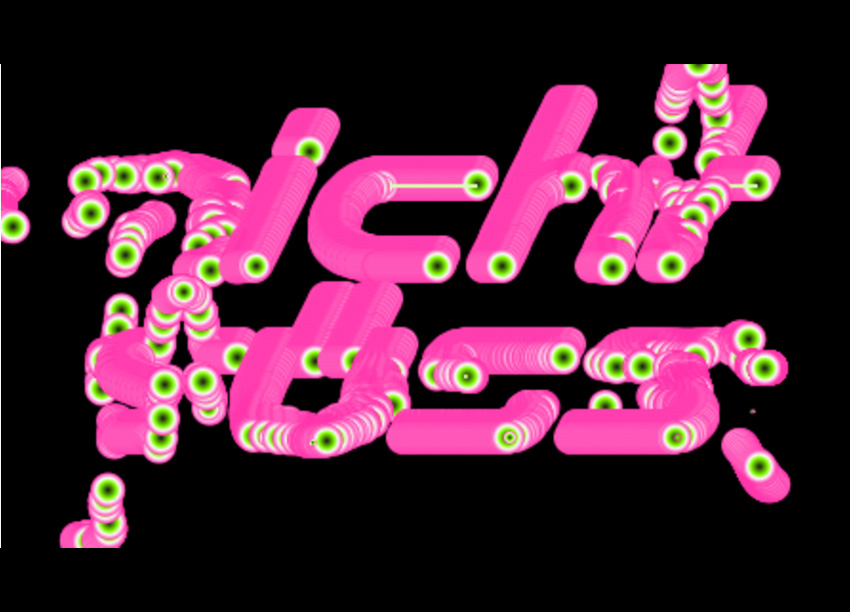
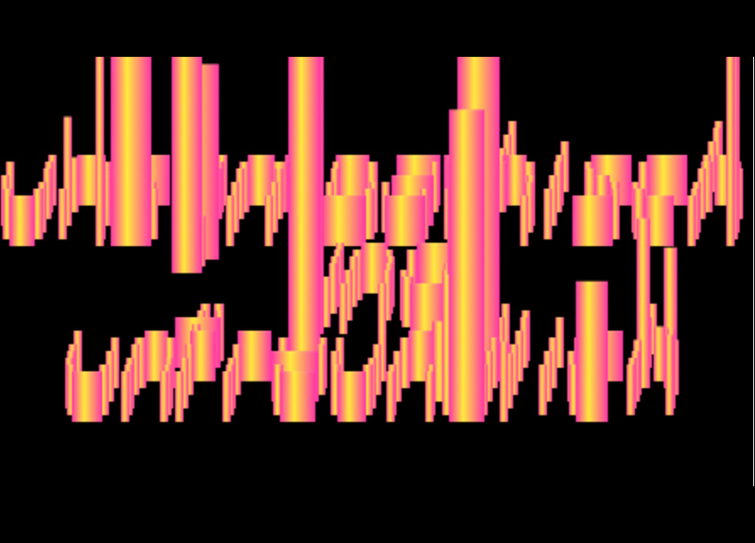
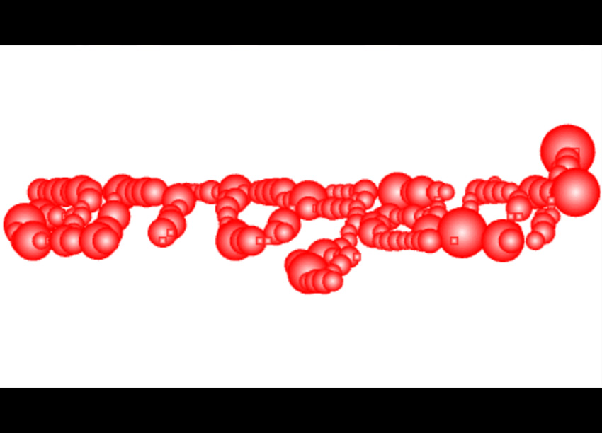
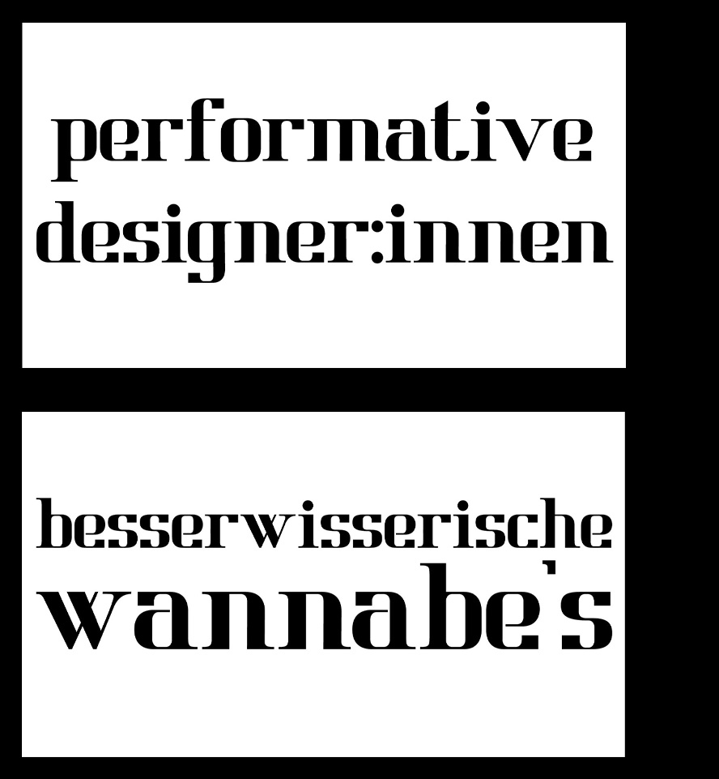
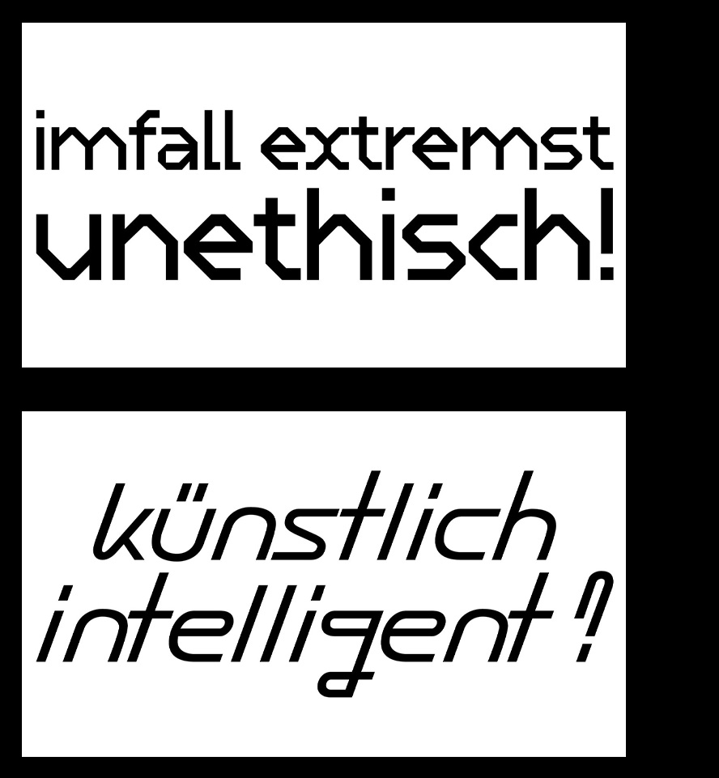
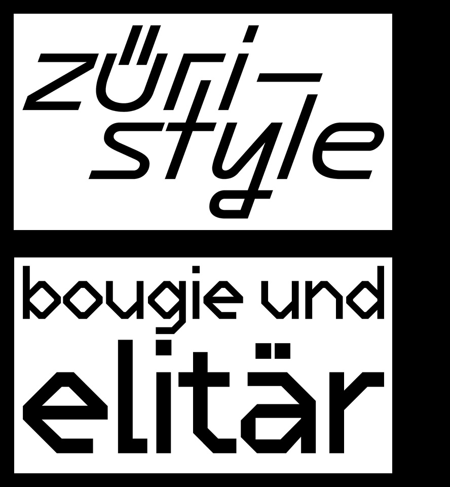

Gerüchteküche
Creative Coding
Gerüchteküche war ein experimentelles Projekt indem wir mit der Website p5.js interaktiven Code entwicklen sollen. In unserem Projekt überdachten wir das Konzept des Type-Specimens & nutzten die ENtfremdung der Schrift durch die wachsenden und sich verschiebenden Formen als Hommage an die Übertreibung und Verzerrung von Gerüchten.
In Zusammenarbeit mit
> Vera Turnherr
> Belina Mensah
Mentoriert von
> Urs Hofer
> Katharina





